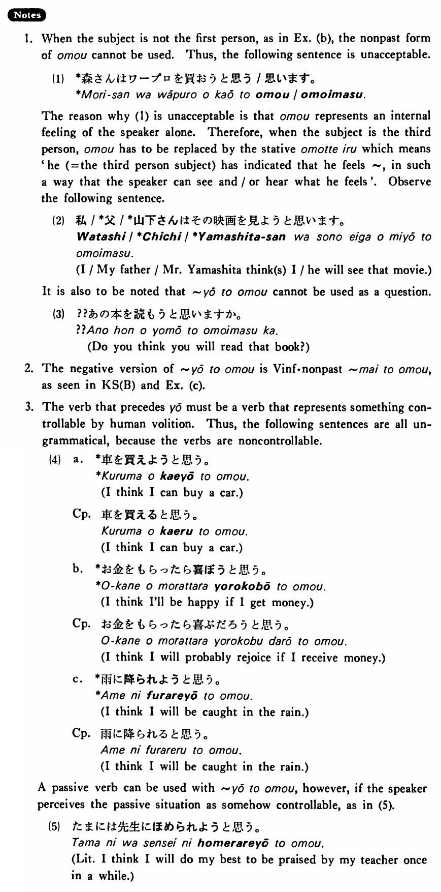

ようと思う (B. 569)
- (ksa).
- 私は日本歴史を読もうと思う・思います。
- I think I will read Japanese history (books).
- (ksb).
- 私はもう酒を飲むまいと思う・思います。
- I think I will not drink alcohol any longer.
- (a).
- 夏休みに日本アルプスに登ろうと思います。
- I think I will climb the Japan Alps during summer vacation.
- (b).
- 森さんはワープロを買おうと思っています。
- Mr. Mori is thinking of buying a word processor.
- (c).
- 僕はあの人とはもう話すまいと思う。
- I think I won't talk to that person any more.
